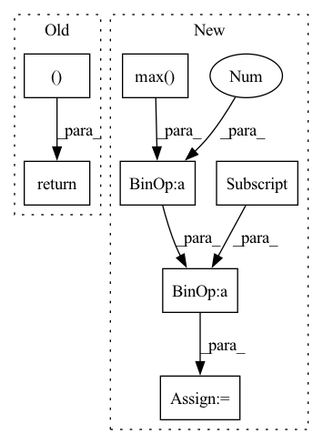

Pattern ID :34088
Before Change
if edge_weight is None:
edge_weight = torch.ones(edge_index.size(1), device=device)
shape = torch.Size((num_nodes, num_nodes ))
adj = torch.sparse_coo_tensor(edge_index, edge_weight, shape,
device=device)
return adj.coalesce()
After Change
if size is None:
size = int(edge_index.max() ) + 1
if not isinstance(size, (tuple, list)):
size = (size, size)
if edge_attr is None:
edge_attr = torch.ones(edge_index.size(1), device=edge_index.device)
size = tuple(size) + edge_attr.size()[1:]
out = torch.sparse_coo_tensor(edge_index, edge_attr, size,
device=edge_index.device)
out = out.coalesce()
return out
In pattern: SUPERPATTERN
Frequency: 4
Non-data size: 7
Instances Fragment ID: 97445498
Project Name: edisonleeeee/greatx
Commit Name: 608dacb26e1473df77cd1248833d43fb7ffa6792
Time: 2022-11-21
Author: cnljt@outlook.com
File Name: greatx/functional/transform.py
M Class Name: AnonimousClass
N Class Name: AnonimousClass
M Method Name: to_sparse_adj(3)
N Method Name: to_sparse_adj(3)
M Parent Class:
N Parent Class:
M File Name: greatx/functional/transform.py
N File Name: greatx/functional/transform.py
M Start Line: 110
M End Line: 118
N Start Line: 114
N End Line: 126
Before Change
new_all_cmc = new_all_cmc.sum(0) / num_valid_q
mAP = np.mean(all_AP)
return new_all_cmc, mAP
def eval_regdb(distmat, q_pids, g_pids, max_rank = 20):After Change
// compute mINP
// refernece: Deep Learning for Person Re-identification: A Survey and Outlook
pos_idx = np.where(orig_cmc == 1)
pos_max_idx = np.max( pos_idx)
inp = cmc[pos_max_idx] / (pos_max_idx + 1.0 )
all_INP.append(inp)
cmc[cmc > 1] = 1 Fragment ID: 97445499
Project Name: mangye16/ddag
Commit Name: 5c40c20530b2bfa360fa8082f79e7d48114a365e
Time: 2020-08-25
Author: 303463418@qq.com
File Name: eval_metrics.py
M Class Name: AnonimousClass
N Class Name: AnonimousClass
M Method Name: eval_sysu(6)
N Method Name: eval_sysu(6)
M Parent Class:
N Parent Class:
M File Name: eval_metrics.py
N File Name: eval_metrics.py
M Start Line: 78
M End Line: 81
N Start Line: 21
N End Line: 81
Before Change
all_cmc = all_cmc.sum(0) / num_valid_q
mAP = np.mean(all_AP)
return all_cmc, mAP After Change
// compute mINP
// refernece: Deep Learning for Person Re-identification: A Survey and Outlook
pos_idx = np.where(raw_cmc == 1)
pos_max_idx = np.max( pos_idx)
inp = cmc[pos_max_idx] / (pos_max_idx + 1.0 )
all_INP.append(inp)
cmc[cmc > 1] = 1 Fragment ID: 97445496
Project Name: mangye16/ddag
Commit Name: 5c40c20530b2bfa360fa8082f79e7d48114a365e
Time: 2020-08-25
Author: 303463418@qq.com
File Name: eval_metrics.py
M Class Name: AnonimousClass
N Class Name: AnonimousClass
M Method Name: eval_regdb(4)
N Method Name: eval_regdb(4)
M Parent Class:
N Parent Class:
M File Name: eval_metrics.py
N File Name: eval_metrics.py
M Start Line: 136
M End Line: 139
N Start Line: 96
N End Line: 148